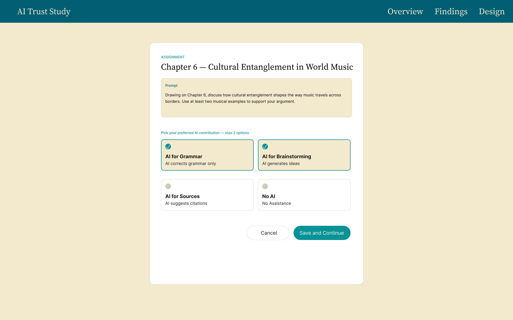
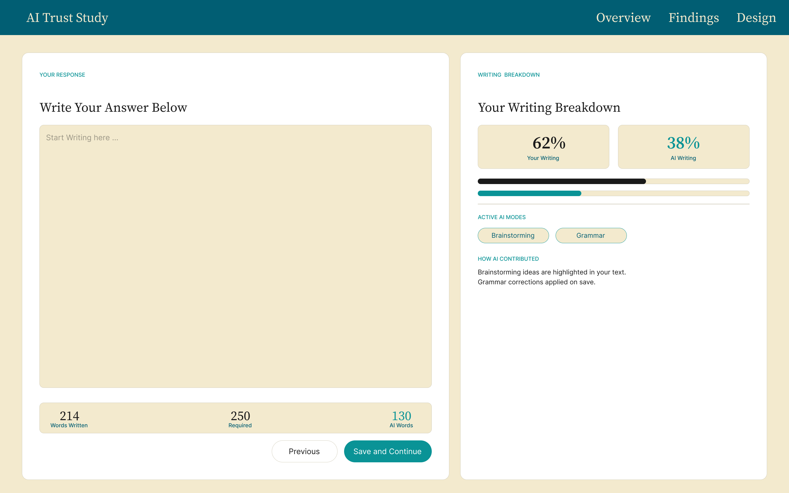
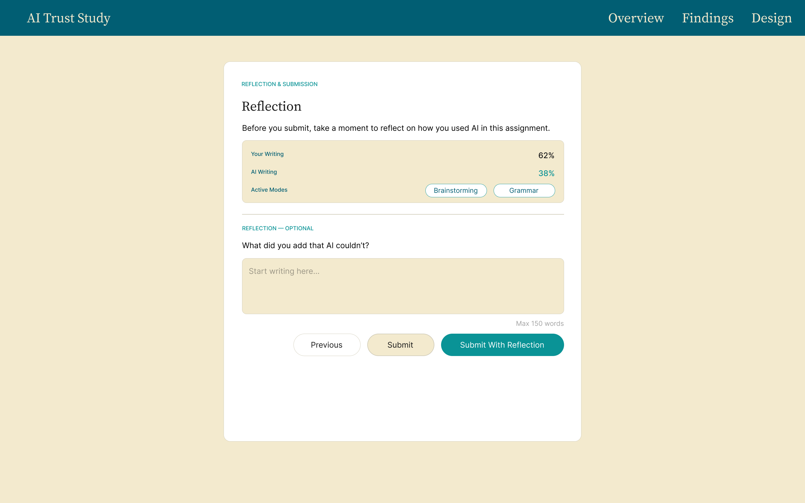

For three years, I observed AI's presence in undergraduate classrooms — not from a distance, but through teaching, direct conversations with students, and the assignments they submitted. As an ethnomusicologist and researcher who teaches undergraduate courses, I watched students offload not just writing, but thinking. The field's response was largely to resist: humanities educators kept sounding the alarm about AI's effect on learning and told students simply not to use it. I understood the concern, but I thought the approach was wrong.
01 — Context
02 — The problem
Humanities educators are making AI policy decisions based on fear rather than evidence.
Without understanding how students actually engage with these tools, blanket resistance leaves students without guidance — and doesn't stop the behavior. We needed a different starting point: what does AI use actually look like when students are given a structured, intentional framework for it? Where do they trust it, where do they push back, and what does that tell us about learning?
03 — What I did
I asked students in Intro to World Musics (MUH2501) to use AI on a real assignment and write openly about their experience — what helped, what felt off, where they took over. I assured them there were no right or wrong answers and no grade penalties. That psychological safety mattered: it gave me honest data rather than performed compliance.
From those responses, I built a 20-code qualitative codebook, analyzed patterns across 12 participants, and developed 5 UX personas representing distinct AI trust postures.
Design response
Based on what I found, I designed a hypothetical assignment framework — a structured Canvas layout that gives students defined boundaries for AI use, preserving the learning process rather than replacing it. This is a speculative design solution to a real, documented problem.
04 — Findings
Five personas emerged from the data, each representing a distinct relationship to AI in academic writing. Mapped across two behavioral axes — delegation and verification — the personas reveal that the critical divide is not whether students use AI, but whether they can evaluate what it produces.
Research participants — 5 of 12
01 / 05
Neeka
Skeptical Collaborator
AI usage pattern
Edits AI output more than she accepts
Primary risk
Accepting polished neutrality that erodes analytical depth
"AI works best as a sparring partner, not a ghostwriter. Accepting the first draft uncritically means outsourcing the thinking entirely."
Behaviors
Goals
Frustrations
Cross-persona patterns
01
AI saves time but creates a hidden learning cost
Nine of twelve participants cited efficiency as their primary motivation. But students who delegated more reported weaker connections to the course material. Speed and depth operate in direct tension — and the tradeoff is invisible to students in the moment.
02
Students self-regulate without any shared framework
Every participant drew their own line on acceptable AI use, with no institutional guidance to reference. Brandon delegated entire drafts; Jenna refused anything requiring personal judgment. Both were operating in the same course, with no shared definition of appropriate use.
03
High-delegation users were least likely to notice what was missing
Students who accepted AI output with minimal revision were also least equipped to catch its errors — generic arguments, fabricated details, mismatches with specific course readings. The more AI handled, the less visible its failures became.
04
Verification skill is the core literacy gap
Maxine, with a CS background, could name AI's failure modes precisely. Most of her peers could not. AI output reads as confident regardless of accuracy, and without a verification habit, students overestimate their ability to detect when something is wrong.
05 — Design implications
The findings pointed to two distinct problems requiring two distinct design responses.
Implication 1
Make the cost of delegation visible
Brandon's pattern — prompting AI with a detailed outline, then submitting with minimal revision — wasn't laziness. It was a rational response to an invisible tradeoff. Nothing in the current assignment experience surfaces what full delegation actually costs. The work gets done, the submission looks complete, and the learning that should have happened simply doesn't.
The design response is to make that cost visible at the moment it matters: a delegation indicator that shows students in real time what proportion of their submitted work is AI-generated versus their own; a lightweight reflection prompt before final submission; and structured AI assist modes — outline, not draft; start, not finish.
Implication 2
Help students verify, not just produce
Maxine could identify AI's failure modes because she had prior knowledge to check against. Most of her peers couldn't — and the problem is that AI output reads as confident regardless of whether it's accurate. The design response builds verification into the workflow: a depth signal layer that flags AI-generated sections lacking course-specific evidence; a claim-check prompt; and a visual indicator that distinguishes how confident AI output sounds from how verifiable it actually is.
What connects both implications
AI tools are designed to produce finished-looking output with no friction, no transparency, and no moment that asks the student to reflect on their own role in the process. The design direction in both cases is the same — introduce intentional friction at the right moment, not to make the tool harder to use, but to make the learning more visible.
06 — Design solution
Based on the research findings, I designed a hypothetical three-screen Canvas assignment framework that gives students defined boundaries for AI use while preserving the learning process.



07 — Reflection
The finding that surprised me most wasn't about AI — it was about students. Every participant already knew how AI worked, had used it before, and could articulate exactly what they were trading away by relying on it. The awareness was there. What drove delegation wasn't ignorance — it was burnout, workload, and the very real fact that not everyone arrives at university as a confident writer. For students who struggle with structure, AI fills a gap that the institution was never filling well to begin with. That realization shifted how I thought about the design problem entirely.
If I ran the study again, I would ask two additional questions: which AI tool each student used, and I would anchor the assignment to a specific song they chose themselves. The second change matters most — when students write about music they personally connect to, the gap between what AI produces and what they actually think becomes impossible to ignore. That contrast would sharpen the findings considerably.
Instead of buying someone a pizza and assuming they'll like it, you give them a menu with options they can actually choose from. The Canvas framework tries to do exactly that — not to remove AI from the equation, but to give students a structured way to decide how much of themselves they want to put in.